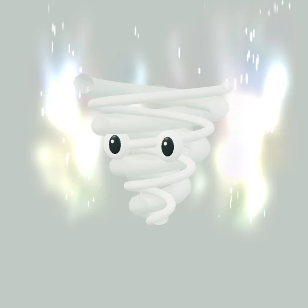
聖天風のクルクル
神聖な森で出会う風のクルクルの仲間。元の姿のまわりに、白っぽい黄色の光と虹のきらめきを重ねている。
キャンプの神聖な森で出会えます。最初に受ける一撃をやわらげます。
カテゴリ：通常／身長：40cm／固有レベル帯：5〜40
パラメータランク：HP18／攻撃力18／気18／速さ23。使用技：通常攻撃・コスモスウェーブ。
珍生物の名前は、おこていゆがつけています。姿、気配、得意なこと。おこていゆの言葉で、出会った相手を記録しています。
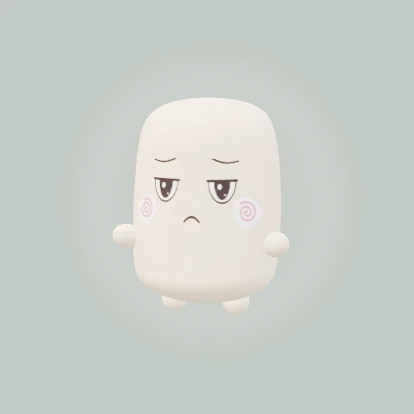
のんびりしていて、ちょっとアホっぽい性格。けれど、よく怒ります。怒り方は静かで控えめ。おこていゆハウスで過ごしていると、表情の小さな変化が見えてくるかもしれません。
世界に潜む珍生物を研究し、世界に害を与える珍生物を撃退したり、落ち着かせたりするヒーローを目指しています。自身も珍生物ながら、世界を護ろうとしています。
日本語は読み書きで理解できますが、日本語で話すことはありません。おこていゆハウスでは「おこていゆ語」でコミュニケーションを取ります。
怒ったときの「ｵｺﾃｲﾕ」、おいしいときの「んま」、いいねを伝える「ナイスエ」。たまに聞こえるひとことにも、気持ちが込められています。
パンチに加えて、おこていゆイベントや成長を通じて、新しい技が使えるようになります。使える技や育て方は、技と成長で紹介しています。
戦いでは、金色に輝く「スーパーおこていゆ状態」になることも。技と成長で、その力や育て方を紹介しています。
| HP | 攻撃力 | 気 | 速さ |
|---|---|---|---|
| 9 | 11 | 10 | 10 |

神聖な森で出会う風のクルクルの仲間。元の姿のまわりに、白っぽい黄色の光と虹のきらめきを重ねている。
キャンプの神聖な森で出会えます。最初に受ける一撃をやわらげます。
カテゴリ：通常／身長：40cm／固有レベル帯：5〜40
パラメータランク：HP18／攻撃力18／気18／速さ23。使用技：通常攻撃・コスモスウェーブ。
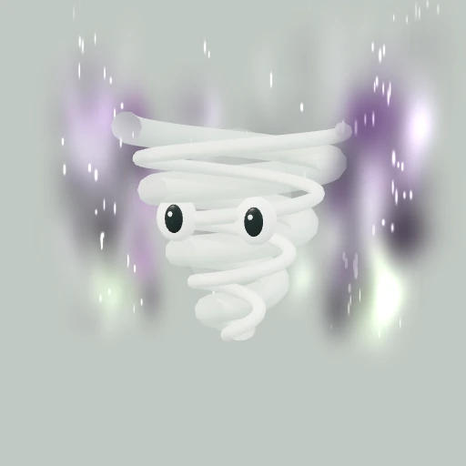
隕石跡地と暗黒域で出会う風のクルクルの仲間。元の姿のまわりに、深い黒紫のモヤを重ねている。
キャンプの隕石跡地・暗黒域で出会えます。最初に受ける一撃をやわらげます。
カテゴリ：通常／身長：40cm／固有レベル帯：5〜40
パラメータランク：HP14／攻撃力14／気14／速さ19。使用技：通常攻撃・溜めエネルギーレイ。
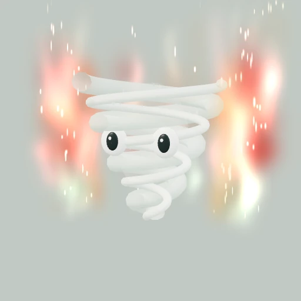
火山で出会う風のクルクルの仲間。元の姿のまわりに、激しい赤い光を重ねている。
キャンプの険しい火山で出会えます。最初の一撃に力を込めます。
カテゴリ：通常／身長：40cm／固有レベル帯：5〜40
パラメータランク：HP13／攻撃力13／気13／速さ19。使用技：通常攻撃・溜めエネルギーレイ。
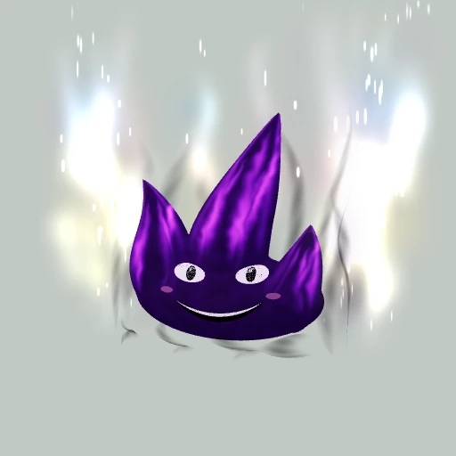
神聖な森で出会うホラララホラランの仲間。元の姿のまわりに、白っぽい黄色の光と虹のきらめきを重ねている。
キャンプの神聖な森で出会えます。最初に受ける一撃をやわらげます。
カテゴリ：通常／身長：40cm／固有レベル帯：1〜100
パラメータランク：HP18／攻撃力18／気18／速さ18。使用技：通常攻撃・エネルギーレイ・コスモスウェーブ。
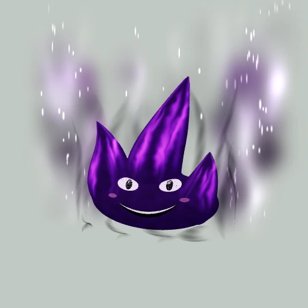
隕石跡地と暗黒域で出会うホラララホラランの仲間。元の姿のまわりに、深い黒紫のモヤを重ねている。
キャンプの隕石跡地・暗黒域で出会えます。最初に受ける一撃をやわらげます。
カテゴリ：通常／身長：40cm／固有レベル帯：1〜100
パラメータランク：HP14／攻撃力14／気14／速さ14。使用技：通常攻撃・エネルギーレイ・溜めエネルギーレイ。
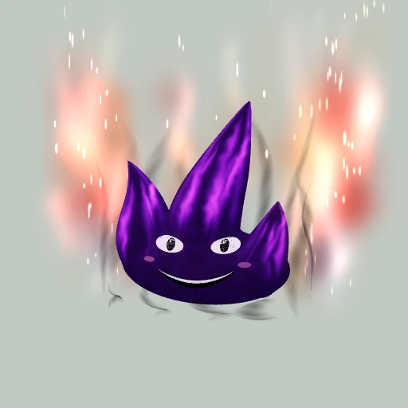
火山で出会うホラララホラランの仲間。元の姿のまわりに、激しい赤い光を重ねている。
キャンプの険しい火山で出会えます。最初の一撃に力を込めます。
カテゴリ：通常／身長：40cm／固有レベル帯：1〜100
パラメータランク：HP13／攻撃力13／気13／速さ13。使用技：通常攻撃・エネルギーレイ・溜めエネルギーレイ。
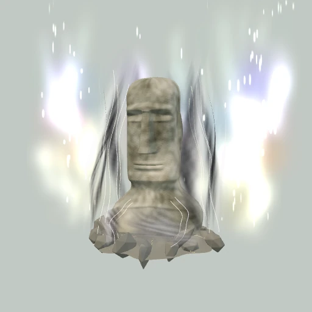
神聖な森で出会うモアイの戦士。黒と金のオーラに、白っぽい黄色の光と虹のきらめきを重ねている。
キャンプの神聖な森で、地形や昼夜を問わず出会えます。最初に受ける一撃をやわらげます。
通常カテゴリ、身長2.5m、固有レベル帯5〜100。パラメータランク：HP24／攻撃力19／気19／速さ15。使用技：通常攻撃・エネルギーレイ・コスモスウェーブ。
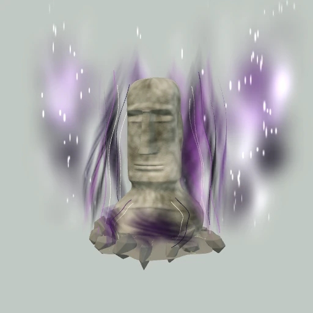
隕石跡地と暗黒域で出会うモアイの戦士。黒と金のオーラに、深い黒紫のモヤがうねる。
キャンプの隕石跡地・暗黒域で、地形や昼夜を問わず出会えます。最初に受ける一撃をやわらげます。
通常カテゴリ、身長2.5m、固有レベル帯5〜100。パラメータランク：HP20／攻撃力18／気18／速さ13。使用技：通常攻撃・エネルギーレイ・溜めエネルギーレイ。
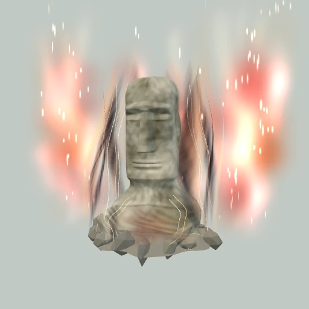
火山で出会うモアイの戦士。黒と金のオーラに、激しい赤い光を重ねている。
キャンプの険しい火山で、地形や昼夜を問わず出会えます。最初の一撃に、いつも以上の力を込めます。
通常カテゴリ、身長2.5m、固有レベル帯5〜100。パラメータランク：HP20／攻撃力15／気15／速さ10。使用技：通常攻撃・エネルギーレイ・溜めエネルギーレイ。
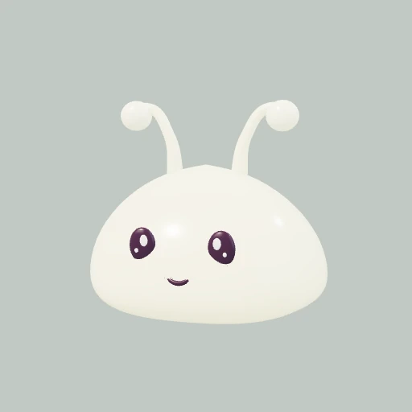
神聖な森で出会う、白っぽい黄色に輝くプニムの仲間。
キャンプの神聖な森で、地形や昼夜を問わず出会えます。最初の一撃を大きくやわらげ、華やかなコスモスウェーブも使います。
通常カテゴリ、身長25cm、固有レベル帯1〜100。パラメータランク：HP16／攻撃力16／気16／速さ16。使用技：通常攻撃・エネルギーレイ・コスモスウェーブ。
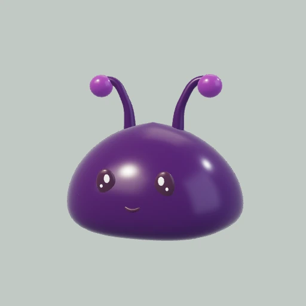
隕石跡地と暗黒域で出会う、黒紫色のプニムの仲間。
キャンプの隕石跡地・暗黒域で、地形や昼夜を問わず出会えます。最初の一撃をやわらげる力を持っています。
通常カテゴリ、身長25cm、固有レベル帯1〜100。パラメータランク：HP14／攻撃力14／気14／速さ14。使用技：通常攻撃・エネルギーレイ・溜めエネルギーレイ。
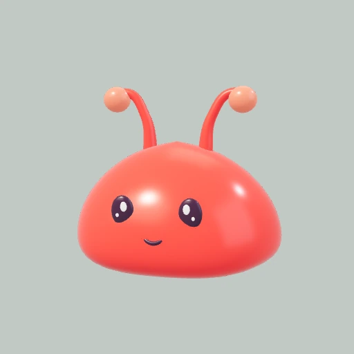
火山で出会う、体が赤いプニムの仲間。
キャンプの険しい火山で、地形や昼夜を問わず出会えます。最初の一撃に、いつも以上の力を込めます。
通常カテゴリ、身長25cm、固有レベル帯1〜100。パラメータランク：HP11／攻撃力11／気11／速さ11。使用技：通常攻撃・エネルギーレイ・溜めエネルギーレイ。
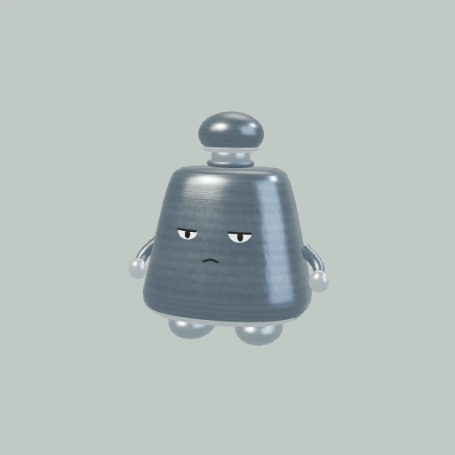
会ったことないけど、なんか先輩っぽいと感じました。
分銅のような体が銀色に光る珍生物。都市部・住宅街に昼夜とも現れます。キャンプでは未開の地と険しい火山の通常エリア・崖・洞窟にも。その風格は、相手が体を使って放つ攻撃の勢いを弱めます。
身長65cm、固有レベル帯25〜65。パラメータランク：HP15／攻撃力13／気6／速さ8。使用技：タックル・通常攻撃。
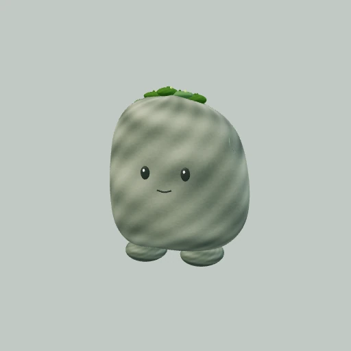
おれも頭に何か欲しい‼️
頭に苔をのせた、小さな石の珍生物。森林に昼夜とも現れ、キャンプでは未開の地の通常エリア・崖・洞窟・見通しの悪い場所でも出会えます。最初の一撃をやわらげる、頼もしい体の持ち主です。
身長40cm、固有レベル帯10〜45。パラメータランク：HP15／攻撃力11／気8／速さ9。使用技：通常攻撃・エネルギーレイ。
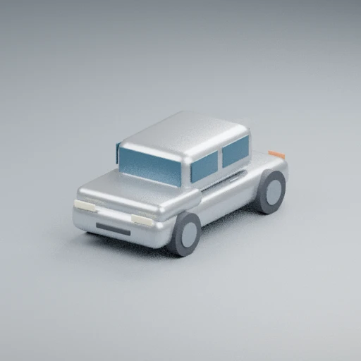
一見するとただの車だけど、こいつは車じゃない!!!
銀色の、独自の形をした珍生物。都市部・住宅街に昼夜とも現れます。身長150cm、固有レベル帯20〜100。小さな相手への攻撃が得意です。
パラメータランク：HP15／攻撃力10／気5／速さ15。使用技：タックル。
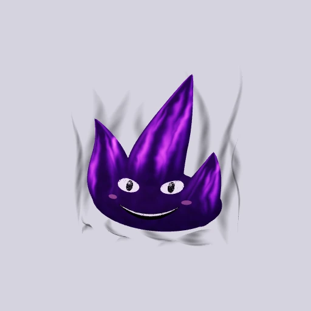
キャンプの未開の地では元の姿で、ほかの区域ではその土地の光を重ねた仲間として出会います。
大きさの違う3つの黒紫色の鬼火がまとまった珍生物。少し可愛げのあるニヤけ顔をしています。
出会う場所：森林・住宅街（昼・夜）
使う技：通常攻撃・エネルギーレイ
| HP | 攻撃力 | 気 | 速さ |
|---|---|---|---|
| 10 | 10 | 10 | 10 |
追加効果なし
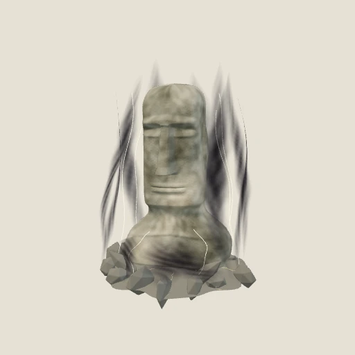
キャンプでは未開の地で出会えます。ほかの区域では、その土地のオーラを重ねた仲間が暮らしています。
歴戦の戦士の風格を感じる、恐ろしい珍生物。
出会う場所：森林・住宅街・都市部（昼・夜）
使う技：通常攻撃・エネルギーレイ
| HP | 攻撃力 | 気 | 速さ |
|---|---|---|---|
| 17 | 14 | 14 | 7 |
追加効果なし
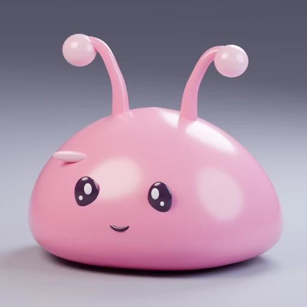
キャンプでは未開の地で出会えます。ほかの区域では、その土地ならではのプニムの仲間が暮らしています。
何だか親近感を覚える珍生物。プニプニしてるからプニム☺️
出会う場所：森林・住宅街・都市部（昼・夜）
使う技：通常攻撃・エネルギーレイ
| HP | 攻撃力 | 気 | 速さ |
|---|---|---|---|
| 8 | 8 | 8 | 8 |
追加効果なし
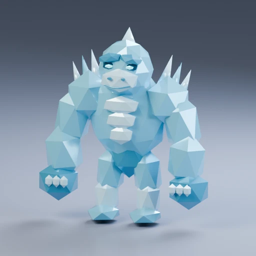
クリスタルのように硬い拳で殴ってくる。こわい😢
出会う場所：森林（夜）
使う技：エネルギーパンチ・溜めパンチ
| HP | 攻撃力 | 気 | 速さ |
|---|---|---|---|
| 11 | 9 | 9 | 9 |
追加効果なし
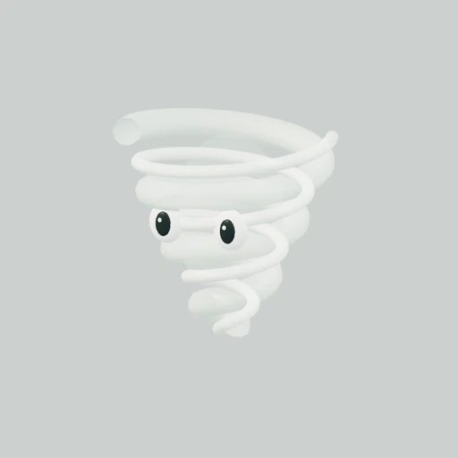
キャンプの未開の地では元の姿で、ほかの区域ではその土地の光を重ねた仲間として出会います。
おこていゆはクルクルしたものが好きだけど、こいつはあんまりかな😢
出会う場所：森林（昼・夜）
使う技：通常攻撃
追加効果なし
| HP | 攻撃力 | 気 | 速さ |
|---|---|---|---|
| 10 | 10 | 10 | 16 |
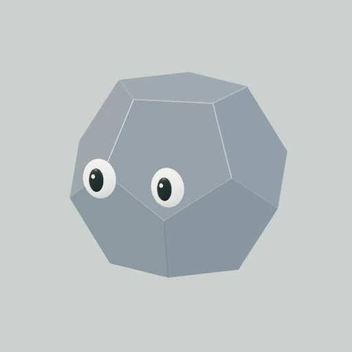
そこら辺の岩かと思って蹴ってたら怒らせちゃった。
出会う場所：住宅街（夜）
使う技：エネルギーレイ・溜めエネルギーレイ
追加効果なし
| HP | 攻撃力 | 気 | 速さ |
|---|---|---|---|
| 18 | 6 | 12 | 5 |
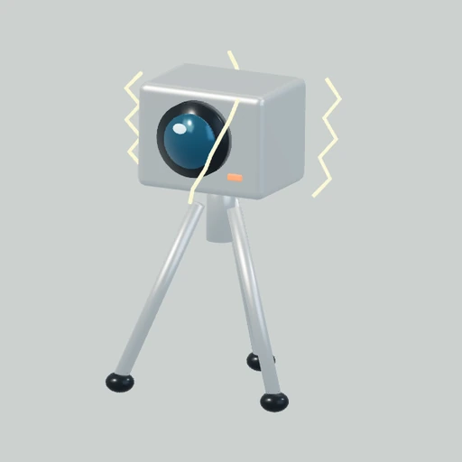
ビームを撃つ為だけに作られたみたいな体してる！！！
出会う場所：住宅街（昼・夜）
使う技：エネルギーレイ・溜めエネルギーレイ
追加効果なし
| HP | 攻撃力 | 気 | 速さ |
|---|---|---|---|
| 13 | 6 | 13 | 10 |
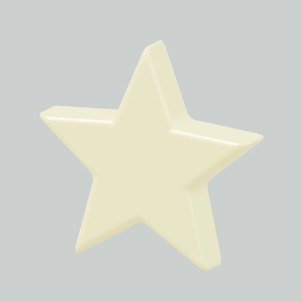
星ってこんな形なんだ！
出会う場所：森林・住宅街・都市部（夜）
使う技：通常攻撃・エネルギーレイ
追加効果なし
| HP | 攻撃力 | 気 | 速さ |
|---|---|---|---|
| 11 | 8 | 12 | 14 |
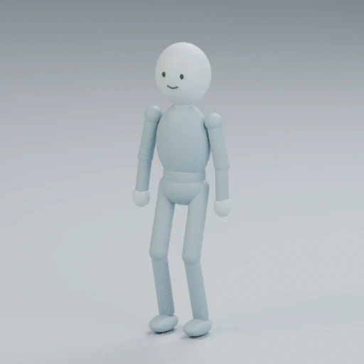
新人ヒーローのようだが、ここはおこていゆの担当エリアです。あと、おこていゆは撃退対象じゃないから😭
身長：約1.5m
出会う場所：都市部・住宅街・森林（昼・夜）
使う技：パンチ・エネルギーレイ
追加効果：最初の一撃では、攻撃力と気を強く高めて攻撃します。
| HP | 攻撃力 | 気 | 速さ |
|---|---|---|---|
| 11 | 8 | 8 | 8 |

体高（肩まで）：約2.5m
赤い光に、さらに燃え立つような赤と橙の輝きを重ねたドラゴン。
キャンプの険しい火山で、地形や昼夜を問わず出会えます。最初の一撃に、いつも以上の力を込めます。
カテゴリ：脅威／固有レベル帯：30〜100
使う技：溜めエネルギーレイ
| HP | 攻撃力 | 気 | 速さ |
|---|---|---|---|
| 18 | 9 | 18 | 13 |

体高（肩まで）：約2.5m
赤い光に、深い黒紫のモヤを重ねたドラゴン。
キャンプの隕石跡地・暗黒域で、地形や昼夜を問わず出会えます。最初に受ける一撃をやわらげます。
カテゴリ：脅威／固有レベル帯：30〜100
使う技：溜めエネルギーレイ
| HP | 攻撃力 | 気 | 速さ |
|---|---|---|---|
| 21 | 12 | 21 | 16 |

体高（肩まで）：約2.5m
赤い光に、白っぽい黄色と虹のきらめきを重ねたドラゴン。
キャンプの神聖な森で、地形や昼夜を問わず出会えます。最初に受ける一撃を大きくやわらげ、コスモスウェーブも使います。
カテゴリ：脅威／固有レベル帯：30〜100
使う技：溜めエネルギーレイ・コスモスウェーブ
| HP | 攻撃力 | 気 | 速さ |
|---|---|---|---|
| 25 | 16 | 25 | 20 |
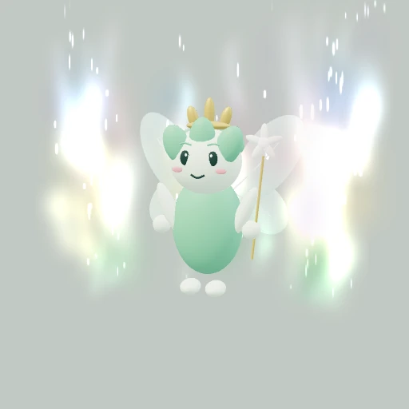
神聖な森で出会う大妖精の仲間。元の姿のまわりに、白っぽい黄色の光と虹のきらめきを重ねている。
キャンプの神聖な森で出会えます。最初に受ける一撃をやわらげます。大妖精の、身を守る力も受け継いでいます。
カテゴリ：脅威／身長：50cm／固有レベル帯：1〜106
パラメータランク：HP19／攻撃力19／気19／速さ19。使用技：エネルギーレイ・タックル・コスモスウェーブ。
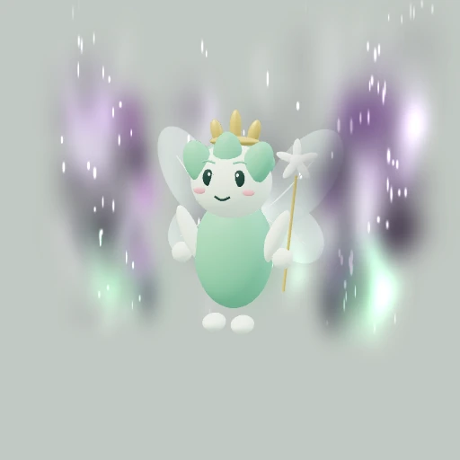
隕石跡地と暗黒域で出会う大妖精の仲間。元の姿のまわりに、深い黒紫のモヤを重ねている。
キャンプの隕石跡地・暗黒域で出会えます。最初に受ける一撃をやわらげます。大妖精の、身を守る力も受け継いでいます。
カテゴリ：脅威／身長：50cm／固有レベル帯：1〜106
パラメータランク：HP18／攻撃力18／気18／速さ18。使用技：エネルギーレイ・タックル・溜めエネルギーレイ。
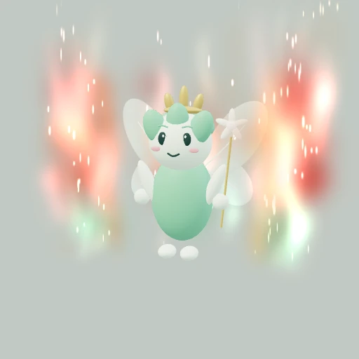
火山で出会う大妖精の仲間。元の姿のまわりに、激しい赤い光を重ねている。
キャンプの険しい火山で出会えます。最初の一撃に力を込めます。大妖精の、身を守る力も受け継いでいます。
カテゴリ：脅威／身長：50cm／固有レベル帯：1〜106
パラメータランク：HP15／攻撃力15／気15／速さ15。使用技：エネルギーレイ・タックル・溜めエネルギーレイ。
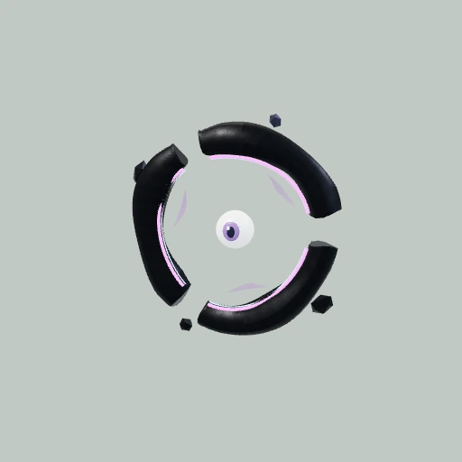
出会った瞬間逃げたいと思ったけど、スーパーヒーローとして逃げなかった<(*¯꒳¯*)>
黒い輪に眼球が浮かぶ、脅威カテゴリの珍生物。パトロールでは現れません。険しい火山・神聖な森・隕石跡地・暗黒域のキャンプで、地形や昼夜を問わず出会うことがあります。戦いの始めに相手の力を取り込み、その強さを変えます。
身長100cm、固有レベル帯35〜100。パラメータランク：HP18／攻撃力11／気17／速さ14。使用技：エネルギーレイ・ヴォイドウェーブ。

モアイに似ているが、何か違う。なぜか違うことがわかるんだ。
モアイの戦士と同じ姿の脅威。身長250cm、固有レベル帯20〜100。都市部・住宅街・森林に昼夜出現します。偽モアイの味方チームに疲れていないモアイの戦士や金モアイがいると、この偽モアイの攻撃が控えめになります。
パラメータランク：HP18／攻撃15／気15／速さ10。使用技：偽モアイビーム・通常攻撃。
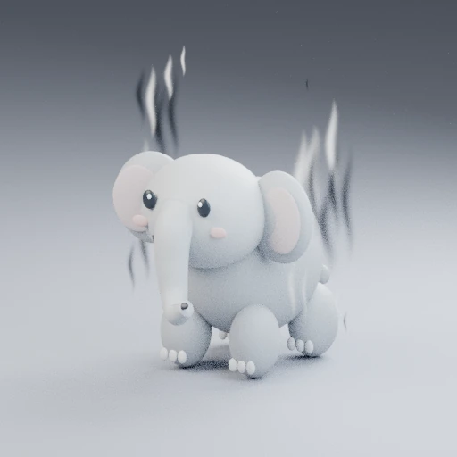
小さくてかわいいね☺️☺️ おこていゆよりも小さいね☺️☺️ かわいいねえ☺️☺️
身長：約30cm
小さな灰色の象。鼻をゆらゆらなびかせ、白と黒の光が上へ立ちのぼります。この光は、手に入る黄色いオーラとは別のものです。
出会う場所：住宅街・森林（昼）
使う技：通常攻撃
追加効果：ミニ象の味方チームに疲れていない他のミニ象がいると、このミニ象が受けるダメージが軽くなります。条件を満たすミニ象が増えても、この守りは重なりません。
| HP | 攻撃力 | 気 | 速さ |
|---|---|---|---|
| 9 | 17 | 8 | 15 |
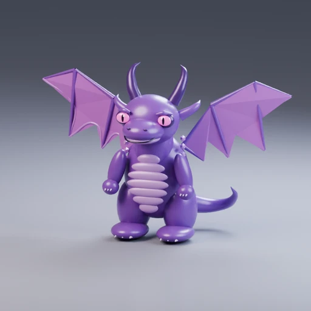
怪しい雰囲気を感じる龍。強そう...な感じはしないけど強いみたい。
出会う場所：森林（昼・夜）
使う技：溜めエネルギーレイ・通常攻撃
| HP | 攻撃力 | 気 | 速さ |
|---|---|---|---|
| 15 | 9 | 14 | 11 |
追加効果なし
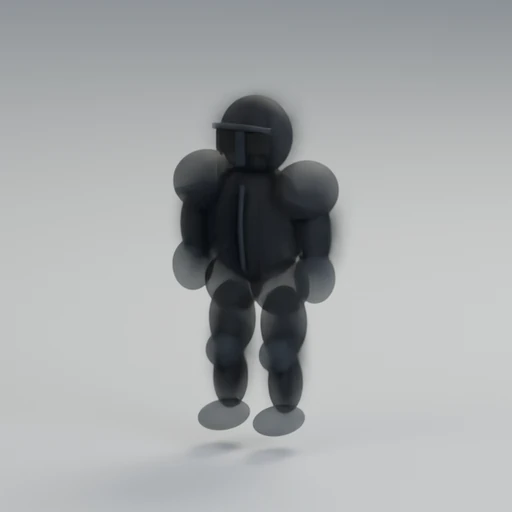
夜に出会ったから透明だと勘違いしてつけた名前。ちなみに強い。
出会う場所：住宅街（昼・夜）
使う技：通常攻撃
| HP | 攻撃力 | 気 | 速さ |
|---|---|---|---|
| 10 | 13 | 5 | 15 |
追加効果なし
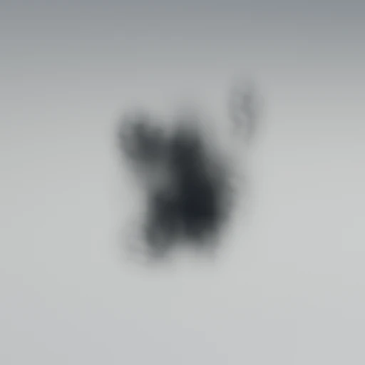
み、見えなかった💦 でもそこまで強くないかも！
出会う場所：森林・住宅街・都市部（昼・夜）
使う技：エネルギーレイ・通常攻撃
| HP | 攻撃力 | 気 | 速さ |
|---|---|---|---|
| 11 | 11 | 11 | 11 |
追加効果なし
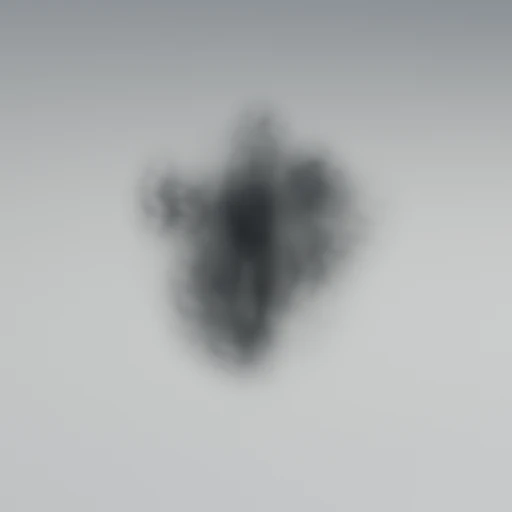
み、見えなかった💦 しかも強い😢
出会う場所：森林・住宅街・都市部（昼・夜）
使う技：エネルギーレイ・通常攻撃
| HP | 攻撃力 | 気 | 速さ |
|---|---|---|---|
| 13 | 13 | 13 | 13 |
追加効果なし
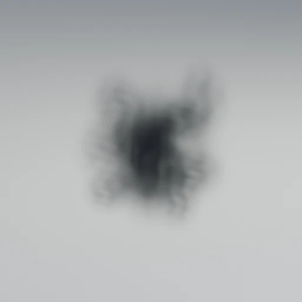
み、見えなかった💦 ほんで強すぎ😭😭😭
出会う場所：森林・住宅街・都市部（昼・夜）
使う技：エネルギーレイ・通常攻撃
| HP | 攻撃力 | 気 | 速さ |
|---|---|---|---|
| 14 | 14 | 14 | 14 |
追加効果なし
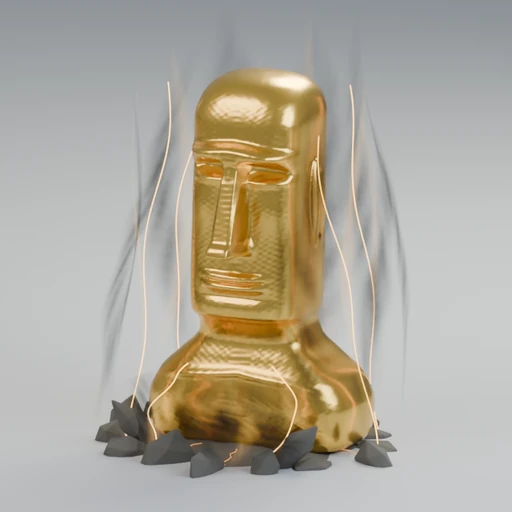
金色のモアイ！？何だかスーパーおこていゆ状態みたいだね！仲間だね🌀 でも強い😭😭😭
出会う場所：森林・住宅街・都市部（昼・夜）
使う技：溜めエネルギーレイ・通常攻撃
| HP | 攻撃力 | 気 | 速さ |
|---|---|---|---|
| 18 | 16 | 16 | 6 |
追加効果なし

体高（肩まで）：約2.5m
力強い四肢と大きな翼、長い尾を持つドラゴン。
キャンプでは、険しい火山・隕石跡地・暗黒域・神聖な森に、その土地ならではの仲間が登場します。パトロールでは、いつものドラゴンに出会えます。
普通の雰囲気のドラゴン。強そうに見えるような見えないような。でも強い。
出会う場所：森林・住宅街・都市部（昼・夜）
使う技：溜めエネルギーレイ
| HP | 攻撃力 | 気 | 速さ |
|---|---|---|---|
| 15 | 6 | 15 | 10 |
追加効果なし
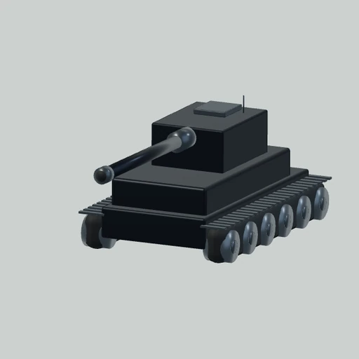
ただでさえ強いのに... 一応珍生物らしい
出会う場所：森林・住宅街・都市部（昼・夜）
使う技：砲撃
追加効果なし
| HP | 攻撃力 | 気 | 速さ |
|---|---|---|---|
| 15 | 14 | 5 | 12 |
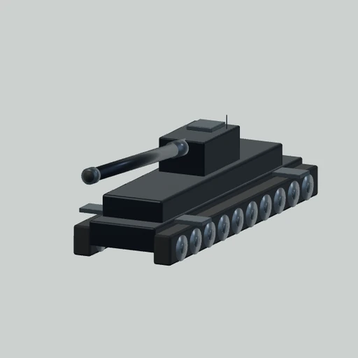
こんなのがうちの近くに居たなんて💦
出会う場所：住宅街（昼・夜）
使う技：砲撃・エネルギーレイ
追加効果なし
| HP | 攻撃力 | 気 | 速さ |
|---|---|---|---|
| 18 | 18 | 5 | 8 |
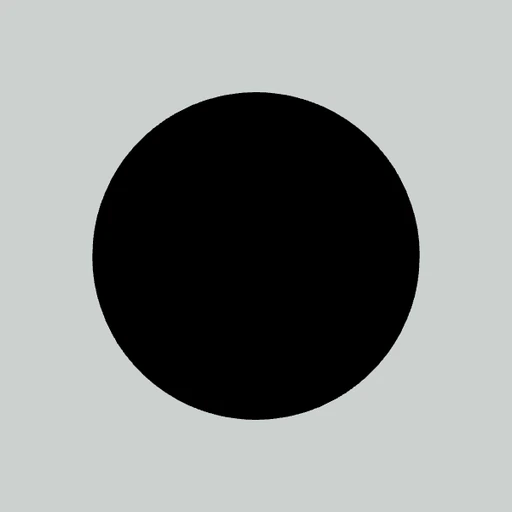
黒い丸です。ちなみに強いです。
出会う場所：森林・住宅街・都市部（昼・夜）
使う技：ヴォイドウェーブ
追加効果なし
| HP | 攻撃力 | 気 | 速さ |
|---|---|---|---|
| 18 | 5 | 18 | 5 |
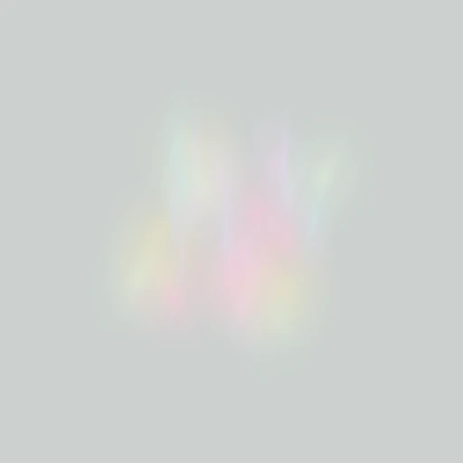
なんかもう、そう呼ぶしかなくない！？と思いました☺️
出会う場所：森林・住宅街・都市部（昼・夜）
使う技：コスモスウェーブ
追加効果なし
| HP | 攻撃力 | 気 | 速さ |
|---|---|---|---|
| 18 | 5 | 18 | 5 |
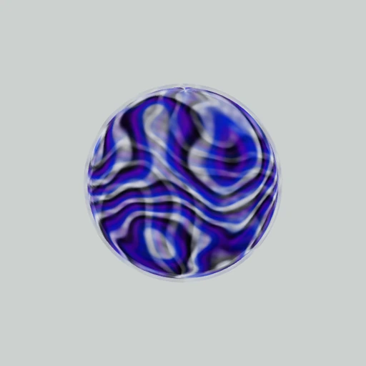
見た目がカオス💦 あんまり触りたくない😢
出会う場所：森林・住宅街・都市部（昼・夜）
使う技：カオスウェーブ
追加効果なし
| HP | 攻撃力 | 気 | 速さ |
|---|---|---|---|
| 15 | 15 | 15 | 5 |
おこていゆのそばにいるおもちゃと、こっそりパトロールを手伝ってくれる妖精たち。それぞれに、冒険を支える役割があります。
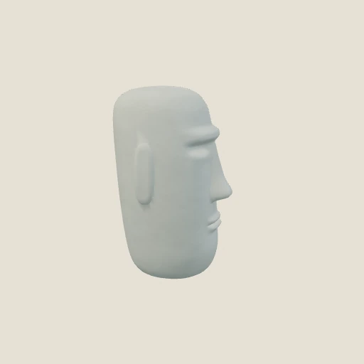
おこていゆについてまわる、小さなモアイのおもちゃ。おこていゆには、特別な思い入れがあります。
小さく跳ねながら後を追い、段差もジャンプでひと越え。サポートもちものとして、戦いも支えてくれます。
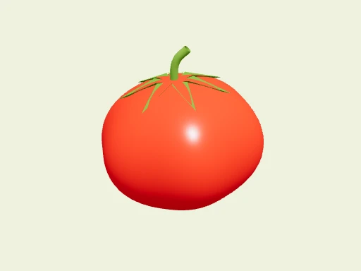
空を飛ぶトマトの妖精。トマトはおこていゆの好物なので、妖精が進んだ道へ、おこていゆもついていきます。
あなたがこっそり後をつけるパトロールで、進んでほしい道をお願いできる仲間です。
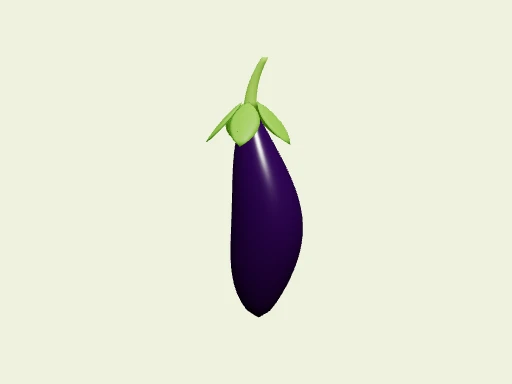
あなたが連れてきた、空を飛ぶナスの妖精。おこていゆはナスが苦手なので、妖精が向かった道を避けようとします。
通ってほしくない道をお願いして、こっそり進路を変える手助けをしてもらいましょう。ただし、別の道を選べないときは、嫌々進むこともあります。
妖精にお願いする操作は、パトロールの「妖精にお願い」で紹介しています。
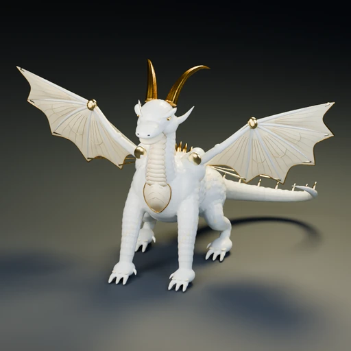
聖なる雰囲を感じる強そうな白いドラゴンのペガサス❕
カテゴリ：ユニーク／固定Lv65／身長：約3.5m
出会う場所：神聖な森の下部「聖天の棲家」／昼・夜
使う技：エネルギーレイ・タックル
相手チームの気の力を大きく弱める珍生物です。気を使う技だけに頼らず、もちものや技の組み合わせを見直してから挑んでみましょう。
初回の発見には、「聖天の古文書」をバッグに入れて棲家の地点まで到達することが必要です。古文書なしで訪れても、棲家は現れません。一度見つければ記録は残り、次のキャンプからは古文書なしでも目標に選べます。探索中に通りかかっただけでは戦いは始まりません。
| HP | 攻撃力 | 気 | 速さ |
|---|---|---|---|
| 28 | 20 | 22 | 25 |

こわいでち。
カテゴリ：ユニーク／固定Lv80／身長：約3m
出会う場所：暗黒域の北部「魔界ゲート」／昼・夜
使う技：カオスウェーブ・タックル・エネルギーパンチ
戦いの始めに、相手チーム全員の攻撃をしばらく止める珍生物です。攻撃を止められている間も、追加効果や助っ人の働きは続きます。もちものやオーラを整えて、最初の攻防に備えておきましょう。
魔界ゲートは、暗黒域の北部を探索して実際にたどり着くと見つかります。一度見つければ次のキャンプから目標に選べます。探索中に通りかかっただけで戦いが始まることはありません。登録地点なので、キャンプ拠点は設営できません。
| HP | 攻撃力 | 気 | 速さ |
|---|---|---|---|
| 25 | 26 | 26 | 25 |
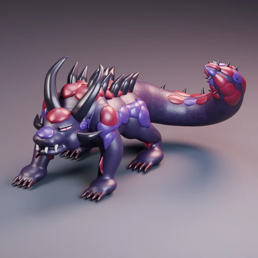
王様気取りの嫌なやつでち。
カテゴリ：ユニーク／固定Lv80／身長：約3m
出会う場所：指定区域Z(玉座)
使う技：カオスウェーブ・タックル
戦いの始めは、受けるダメージを大きく和らげる珍生物です。その守りはずっと続くわけではないので、こちらの備えも整えて、落ち着いて様子を見てみましょう。
| HP | 攻撃力 | 気 | 速さ |
|---|---|---|---|
| 32 | 26 | 18 | 25 |
探索で出会った珍生物。正体は今後明かされる。
カテゴリ：ユニーク／身長：1m
危険地帯には、「???-15」「???-20」のような名前の珍生物が待っています。遠方ほど強い個体が現れ、それぞれの場所で再戦できます。
使う技：エネルギーレイ・タックル・カオスウェーブ
本体と黒いオーラの追加効果は、どちらも不明です。
| 名前 | Lv. | HP | 攻撃力 | 気 | 速さ |
|---|---|---|---|---|---|
| ???-15 | 15 | 15 | 14 | 14 | 12 |
| ???-20 | 20 | 15 | 15 | 15 | 13 |
| ???-25 | 25 | 16 | 14 | 14 | 14 |
| ???-30 | 30 | 17 | 15 | 15 | 15 |
| ???-35 | 35 | 17 | 15 | 15 | 14 |
| ???-40 | 40 | 18 | 16 | 16 | 15 |
| ???-45 | 45 | 19 | 17 | 17 | 16 |
| ???-50 | 50 | 20 | 18 | 18 | 17 |
| ???-55 | 55 | 20 | 19 | 19 | 18 |
| ???-60 | 60 | 18 | 20 | 20 | 19 |
| ???-65 | 65 | 19 | 18 | 18 | 20 |
| ???-70 | 70 | 19 | 18 | 18 | 18 |
| ???-75 | 75 | 20 | 19 | 19 | 19 |
| ???-80 | 80 | 21 | 20 | 20 | 20 |
| ???-85 | 85 | 21 | 21 | 21 | 21 |
| ???-95 | 95 | 23 | 23 | 23 | 23 |
| ???-100 | 100 | 24 | 24 | 24 | 24 |
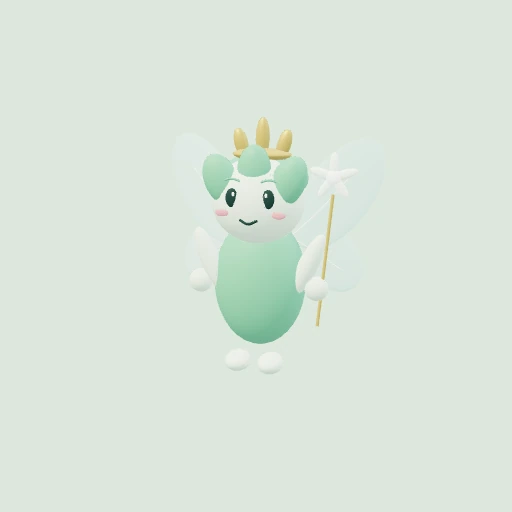
キャンプの未開の地では元の姿で、ほかの区域ではその土地の光を重ねた仲間として出会います。
森のさらに奥で出会う、大きな羽の妖精。小さな体に、静かな強さを秘めています。
カテゴリ：脅威／身長：約50cm
出会う場所：未開の地・キャンプの最終地点
使う技：エネルギーレイ・タックル
身を守る力があり、受けるダメージを和らげます。途中の探索で消耗しすぎないよう、準備を整えて会いにいきましょう。
| HP | 攻撃力 | 気 | 速さ |
|---|---|---|---|
| 14 | 14 | 14 | 14 |